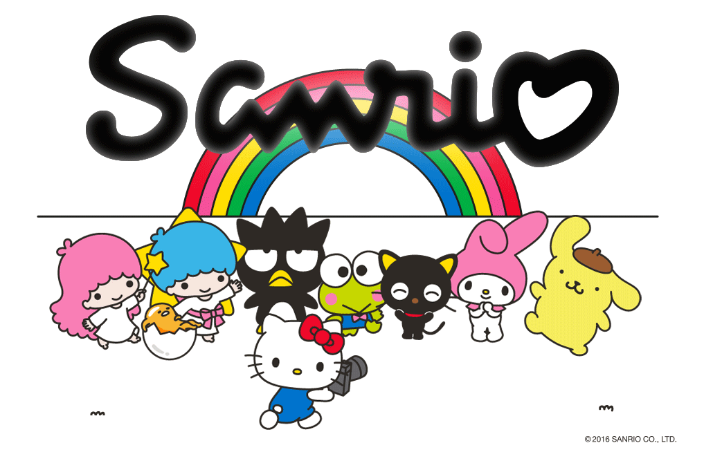
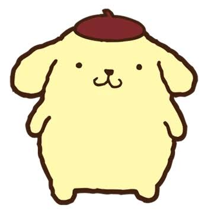
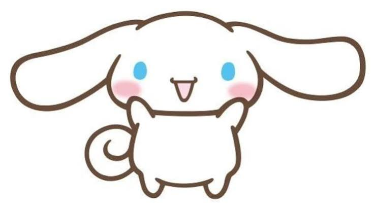
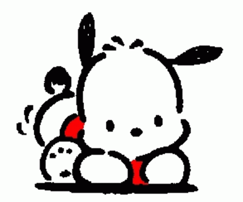
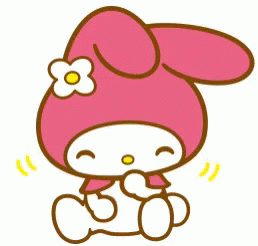
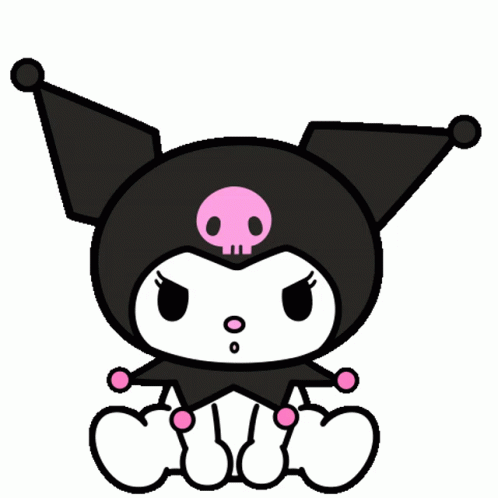
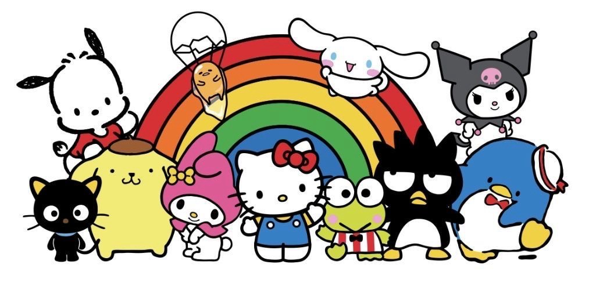

En Sanrio creemos que un pequeño detalle puede crear grandes amistades desde 1960 diseñamos personajes llenos de ternura para llenar de alegría cada momento de tu día.
HELLO KITTY
.jpg)
Representa la amistad y la bondad
Representa la bondad universal, la amistad y la conexión emocional. No tiene boca para que cada persona pueda proyectar en ella sus propios sentimientos (alegría o tristeza) según su estado de ánimo, recordando su lema: "Nunca se tienen demasiados amigos".
creadora
Yuko shimizu

POMPORIUM
Representa la calma
representa la calma, la calidez y la alegría de disfrutar las cosas simples de la vida. Este perrito Golden Retriever con boina marrón simboliza a las personas relajadas, sociables y cariñosas que valoran el descanso y la buena comida.
creadora
Akiko chii

CINAMONROLL
La dulzura y los sueños
Este cachorro blanco con orejas largas que le permiten volar simboliza la ternura, la calma y la imaginación. Su nombre proviene de su cola enroscada como un rol de canela (cinnamon roll) y representa a quienes son tímidos, soñadores y disfrutan de los momentos tranquilos.
creadora
Miyuki okumura

POCHACCO
La energia y el deporte
Su nombre viene de la expresión japonesa pochapocha (regordete o tierno). Este perrito blanco representa la vitalidad, la curiosidad y el espíritu deportivo. Simboliza a las personas activas, alegres y un poco torpes que disfrutan jugar al aire libre (como el fútbol o el baloncesto) y vivir aventuras con amigos.
creador
Minoru onoue

MY MELODY
La inocencia y la armonia
Esta conejita con capucha rosa inspirada en Caperucita Roja representa la dulzura tradicional, la honestidad y la paciencia. Su nombre alude a la melodía y la armonía, simbolizando a quienes son amables, ingenuos, buenos escuchando a los demás y buscan mantener la paz en su entorno.
creadora
Yasuko Matsumoto

KUROMI
La rebeldia y la autenticidad
Nacida como la rival de My Melody, encarna el espíritu rebelde, caótico y punk-cute. Representa la autenticidad sin filtros: aunque aparenta ser ruda, traviesa y usa un gorro de bufón con una calavera rosa, en el fondo es muy romántica, sensible y escribe en su diario, simbolizando que está bien mostrar tanto el lado oscuro como el tierno.
creadora
Tomoko Miyagama
Lleva la magia de Sanrio a tu dia a dia
Descubre nuestra colección oficial ,artículos exclusivos.
